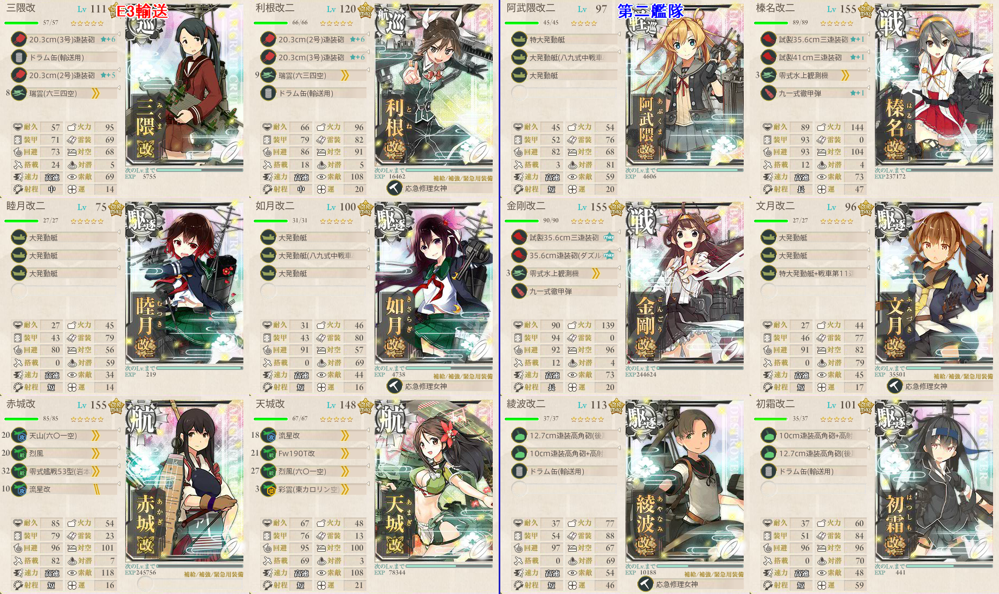
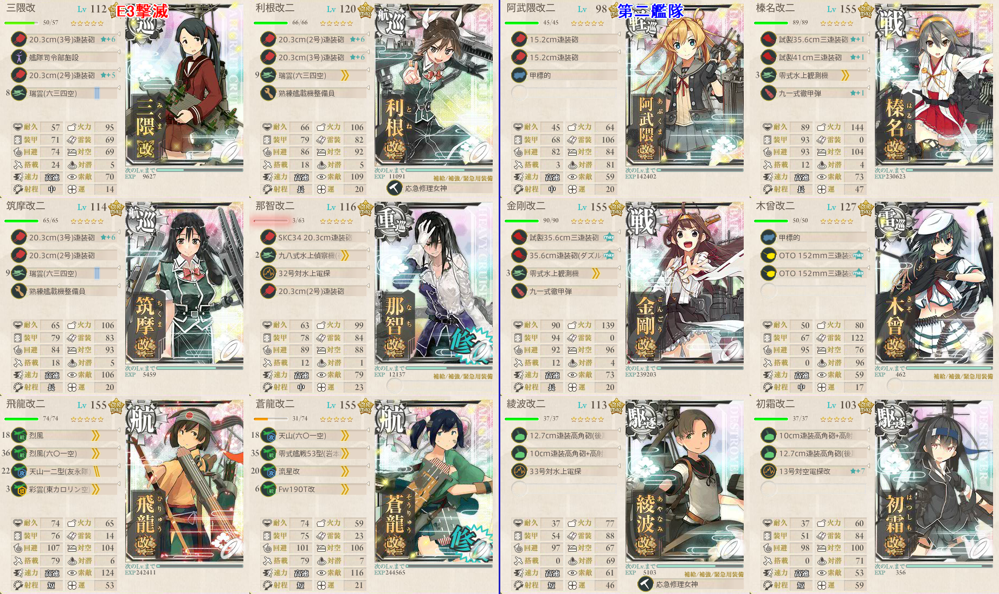

【艦これ】西方再打通！欧州救援作戦 E3
難易度：乙
輸送作戦
構成

機動部隊
- 輸送連合は第二艦隊が貧弱すぎるためオススメできない
- 水上打撃部隊は制空権の面でやや辛い
制空310程度で道中優勢
決戦支援は不要。道中支援はあると安心
阿武隈は予備艦を使用している
開幕対潜マスを通ることを加味しても、機動部隊での攻略が断然ラク
Eの能動分岐ではFを選択しなければ、Jに反れてしまう
また、戦艦は第二艦隊に入れるようにしなければ、Jに反れる
画像の編成だとS勝利でTP151、A勝利でTP81
乙は輸送ゲージ390のため、S勝利2+A勝利1で達成可能
この編成であればボスSは容易いので、いくらかの装備を対潜/対空/火力に回しても良い
撃滅作戦で二航戦を使うことになるので、画像の赤城や天城は二航戦にしたほうが良さそう
出撃ログ（乙）
| 回数 | 編成 | ルート | 戦果 | |
|---|---|---|---|---|
| 1 | 第一 | 三隈 千歳 文月 如月 睦月 村雨 | ACDEHIKL | I睦月大破 綾波退避 A勝利 TP81 |
| 第二 | 長良 綾波 初霜 黒潮 利根 | |||
| 2 | 第一 | 三隈 榛名 金剛 利根 赤城 天城 | BCDEFI | 利根 文月大破 |
| 第二 | 阿武隈 文月 如月 睦月 綾波 初霜 | |||
| 3 | 第一 | 三隈 榛名 金剛 利根 赤城 天城 | BCDEFIJKL | S勝利（加賀） TP151 |
| 第二 | 阿武隈 文月 如月 睦月 綾波 初霜 | |||
| 4 | 第一 | 三隈 利根 睦月 如月 赤城 天城 | BCDEFIKL | S勝利（翔鶴） TP151 |
| 第二 | 阿武隈 榛名 金剛 文月 綾波 初霜 | |||
| 5 | 第一 | 三隈 利根 睦月 如月 赤城 天城 | BCDEFIKL | S勝利（瑞鶴） ゲージ破壊 |
| 第二 | 阿武隈 榛名 金剛 文月 綾波 初霜 | |||
敵編成
| マス | 敵航空戦力 | 敵潜水艦 | 備考 |
|---|---|---|---|
| B | なし | あり | 潜水艦3 |
| C | あり | なし | 空襲戦 軽空母1 軽巡1 ツ級1 駆逐3 |
| D | あり | なし | 軽空母1 軽巡1 ツ級1 駆逐3 |
| F | あり | なし | 空襲戦 |
| H | あり | なし | 空襲戦 |
| I | あり | なし | 空母1 軽空母1 軽巡1 ツ級1 駆逐2 複縦陣 |
| J | なし | あり | 潜水艦3 |
| L | なし | なし | 戦艦4 駆逐2 |
撃滅作戦
構成

機動部隊
蒼龍/飛龍を入れるかつ高速統一でルート固定
- 二航戦がいないとAに反れる
甲作戦とは固定条件が異なるらしい
敵の第二艦隊が脆いため、決戦支援がかなり効果的に刺さる
出撃ログ（乙）
| 回数 | 編成 | ルート | 戦果 | |
|---|---|---|---|---|
| 1 | 第一 | 三隈 利根 筑摩 赤城 天城 | BCDEHMQ | S勝利（翔鶴） |
| 第二 | 阿武隈 榛名 金剛 木曾 綾波 初霜 | |||
| 2 | 第一 | 三隈 利根 筑摩 那智 蒼龍 飛龍 | ACDEHMQ | A勝利（秋雲） |
| 第二 | 阿武隈 榛名 金剛 木曾 綾波 初霜 | |||
| 3 | 第一 | 三隈 利根 筑摩 那智 蒼龍 飛龍 | ACDEHNQ | S勝利（まるゆ） |
| 第二 | 阿武隈 榛名 金剛 木曾 綾波 初霜 | |||
| 4 | 第一 | 三隈 利根 筑摩 那智 蒼龍 飛龍 | ACDEHMQ | S勝利（赤城） |
| 第二 | 阿武隈 榛名 金剛 木曾 綾波 初霜 | |||
| 5 | 第一 | 三隈 利根 筑摩 那智 蒼龍 飛龍 | ACDEHNQ | S勝利（天津風） |
| 第二 | 阿武隈 榛名 金剛 木曾 綾波 初霜 | |||
敵編成
| マス | 敵航空戦力 | 敵潜水艦 | 備考 |
|---|---|---|---|
| B | なし | あり | 潜水艦3 |
| C | あり | なし | 空襲戦 軽空母1 軽巡1 ツ級1 駆逐3 |
| D | あり | なし | 軽空母1 軽巡1 ツ級1 駆逐3 |
| H | あり | なし | 空襲戦 |
| M | あり | なし | 空母1 軽空母1 戦艦1 ネ級1 駆逐2 298～343で優勢 輪形陣 |
| N | あり | なし | ヲ級2 軽巡1 ツ級1 駆逐2 複縦陣 |
| Q | あり | なし | ボス 連合艦隊 ツ級1 駆逐5＋重巡夏姫1 ヲ級1 戦艦1 駆逐古姫1 駆逐2 275～320で確保 |
| あり | なし | 最終段階 第二旗艦と第一の駆逐がやばい駆逐になる | |